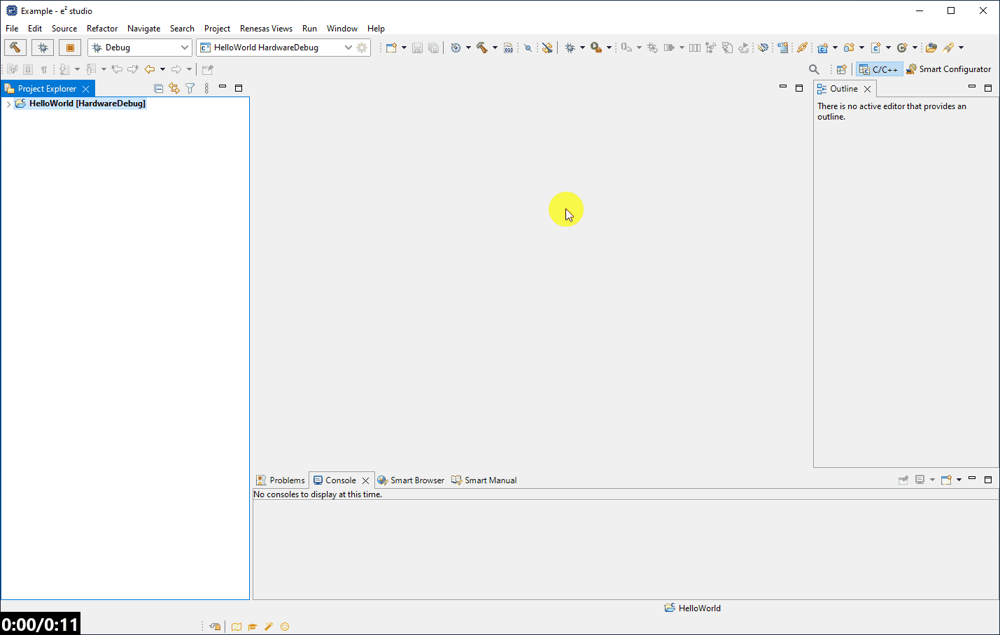

Here we will guide you through configuring a basic hello world project for the RL78/G23 - specifically we will target the RL78/G23 128p FPB device R7F100GSN.
This project will simply increment a counter in an infinite loop & toggle a GPIO.
Allowing us to use a range of basic build and debug features in subsequent sections of this lab.
For more information on the smart configurator please consult the e2studio users manual and Smart
Configurator User Manual (RL78 API Reference).
4.1 - Basic Navigation [informative]
The raw project contents can be accessed in the "Project Explorer" view - this gives a folder/file tree view of the project.
This allows access to the binaries, scripts, configuration files, project files, source code, makefiles etc. specific to a project.
The animation below shows the basic use of the project explorer to open the main source file of a project. 
The project explorer is an example of a "view". A view is an element which visualises a function of the IDE.
Other examples of views include:
Console - the console window where the build tool output is printed.
Memory Browser - allows a user during debug to browse the contents of the devices memory.
Memory Usage - allows a user to evaulate the memory consumption (ROM and RAM) of a device by interpretting graphically the .map file output from the linker after the build process.
To access these views (expecially useful if one is accidentally closed or lost), a user can click: [Window] → [Show View] → [Other...]
and search for the sorted views they would like to use.
This is shown in the animation below.
Eclipse based IDE's make use of a visualisation concept known as "perspectives" - the perspective can be changed, as well as new ones can be added, using the buttons in the top right corner.
A perspective is a collection of views/windows (e.g. the text editor and the project explorer) combined with the way they are layed out - providing the user a different "perspective" to use the IDE from.
All perspectives are customisable, that is both the views/windows and their arrangement/layout can be manipulated and these changes are persistent to the workspace.
Changing the perspective can be seen in the animation below.
Renesas differs from its competitors when providing drivers and collateral material (code) which runs on the RL78.
Where competitors typically provided a code base where the programmer manually acquires the source code or library for each driver, Renesas
offers the programmer the ability to pull in different drivers and components using a grpahical user interace. The drivers can then be configured using the
same user interface. Once finished chosing the components required using the user interface, the code is then auto generated and placed in the project for the user to read and customise if they wish.
This offers the best tradeoff of speed and intuitive design - the initialisation function is custom to the settings required for a peripheral/middleware i.e. no runtime cost for initialisation and
the drivers offer optimum performance with flexibilty, with integrated support with interrupts if used.
This method also offers the user a single point of traceability for "what components/periherals are being used and how".
Renesas offers a host of these configuration tools for the RL78 family - these include the Code Generator, AP4/Applilet & Smart Configurator.
The AP4/Applilet tool is a standalone tool whereas the Code Generator and the Smart Configurator are embedded into e2studio.
The Code Generator tool can be used to configure and generate drivers for almost all devices in the RL78 family (with the exception of the RL78/G23).
Whereas the latest tool, the Smart Configurator, can be used with only the latest RL78 devices (including the RL78/G23 and anu devices released after).
The base function of these tools is similar. They all allow; initial system configuration (clocks, on chip debug, flash mdoes etc.), peripheral configuration & basic peripheral driver generation.
In this lab we will be using the Smart Configurator as it targets the RL78/G23, the latest device in the RL78 lineup.
The Smart Configurator improves on the Code Generator tools by allowing the inclusion of middleware (e.g. capactive touch), managing packages remotely
i.e. allowing updates to the packages (board support backages (BSP), peripheral components and middleware) via network connection and also includes support
for the latest peripheral set e.g. graphical flow chart style programming tools for the SMS peripheral.
Accessing the smart configurator is done in much the same way as the code generator, there is a configuration file associated with the project
and the smart confgirators is XML based - to open the smart configurator, you simply double click on the .xml file - the easiest way to use the smart configurator is to do so whilst in the
smart configurator perspective. The animation below shows how to open the smart configurator and set the perspecitve.
e2studio is deeply technical IDE with more tools than can be covered in a single lab.
To get the most out of this IDE the user should make use of the user manual embedded in the IDE.
This can be accessed by: [Help] → [Help Contents]
This is shown in the animation below.
4.2 - Clocks & Supply
Ensure the Smart Configurator is open - this should be default, if not, please see step 4.1 for opening the smart configurator and setting the perspective appropriately.
Navigate to the Clocks Tab & using both dropdowns set the operating mode to High-speed main mode 2.7(V)~5.5(V) and the EVDD setting to 2.7 V ≤ EVDD 5.5 ≤ V
This allows us to operate at 3.3V.
4.3 - System
Navigate to the System Tab & set the On-chip debug operation to COM Port.
4.4 - Components
Navigate to the Components Tab & using the Add Components button, add a Port component.
Enable the PORT5 checkbox, navigate to the PORT5 Tab and set P50 to output.
4.5 - Generate Code
Now click Generate Code.
What happens here is the src/smc_gen folder is populated with code reflecting the settings made in the smart configurator.
This folder now contains Config_PORT, which is the name of the Ports componentwe added when setting a GPIO.
If we were to look inside here we would find a function:
void R_Config_PORT_Create(void);
This function is automatically called during startup.
By default Renesas supplies a cstart.asm assembly file (src/smc_gen/r_bsp/mcu/all/cstart.asm) which contains the code called on Reset.
The reset vector address is set to the _start function contained in this file which prepares the c runtime environment
(copies ROM to RAM for initialised variables etc.) - interestingly during this initialisation another function is called:
void bsp_init_hardware(void);
found in src/smc_gen/r_bsp/board/generic_rl78_g23/r_bsp_init.c.
This function eventually resolves to calling clock initialisation code +
the XYZ_Create functions for any peripherals we configured, including R_Config_PORT_Create.
Note that many periherals need extra API calls such as XYZ_Start in order to enable them, though this is not the case for Ports (the only moduel we have included).
For more information on what API's are automatically called during startup see the Smart
Configurator User Manual (RL78 API Reference).
Importantly though, this ensures that when our cstart.asm calls the main function, not only is the c runtime environment set up but the perihperal initialisation is done.
4.6 - Write Code
Navigate to your main function (located in src/{PROJECT_NAME}.c) and replace the contents of the file with: